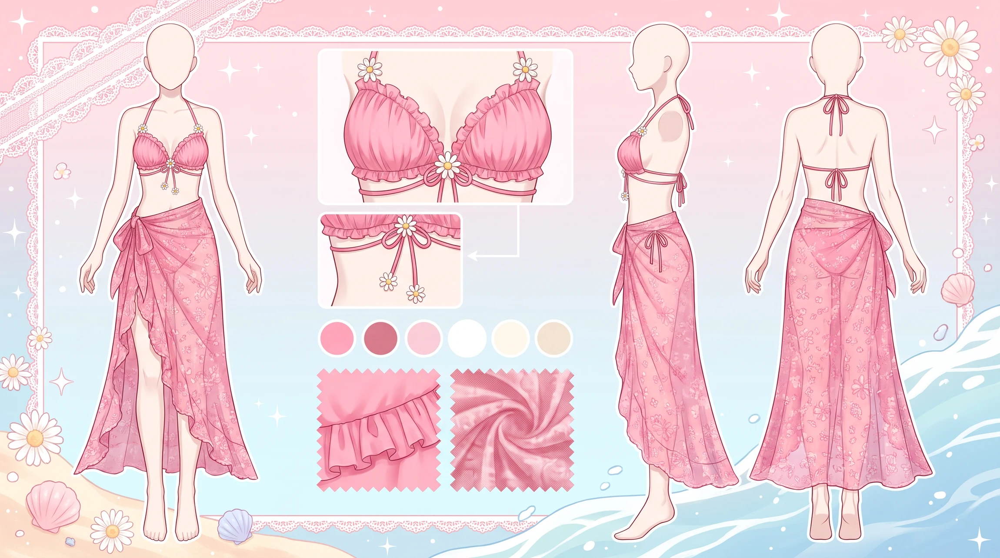
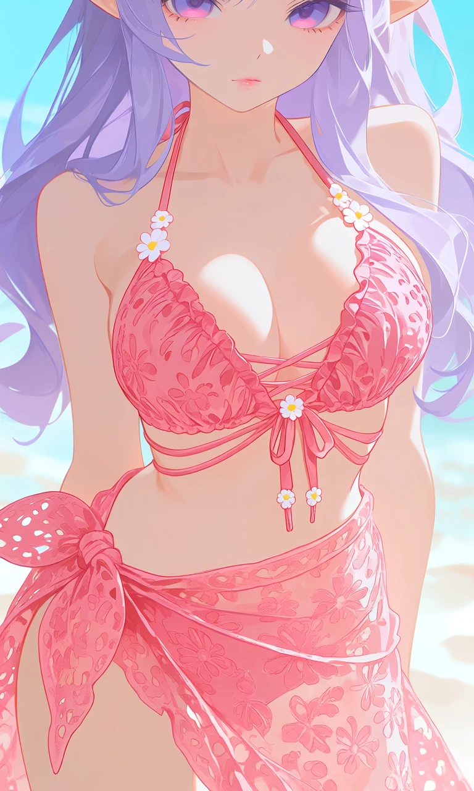

Daisy at the Shore

Outfit Prompt
She is wearing a cute swim suit.
Color & Fabric:
Vibrant pink (a soft, warm baby pink / coral-pink shade).
Textured eyelet fabric: The material has a raised, embroidered floral pattern that gives it a delicate, summery, and slightly textured appearance. The fabric appears lightweight and breathable, ideal for swimwear.
Small decorative white daisy/flower accents on the ties and straps add a playful, cottage-core touch.
Bikini Top:
Halter triangle style with adjustable ties that go around the neck.
Smocked / ruched cups for a gathered, flattering fit that provides some stretch and shape.
Signature cross-straps under the bust: Multiple thin straps wrap around the torso and tie in the front with pink fabric ties and white flower beads. This creates a cut-out/caged effect that accentuates the waist and adds visual interest.
The overall silhouette is supportive yet sexy, emphasizing the bust and midriff.
Bottom & Wrap Skirt:
The bikini bottom itself isn’t fully visible, but the set includes a matching sarong skirt.
The wrap is made from the same eyelet fabric and is tied in a large, casual side bow/knot on the left hip.
It’s styled asymmetrically — shorter on one side, draping longer on the other to her mid thigh — creating a flattering, flirty drape over the hips and thighs.
Outfit Examples

